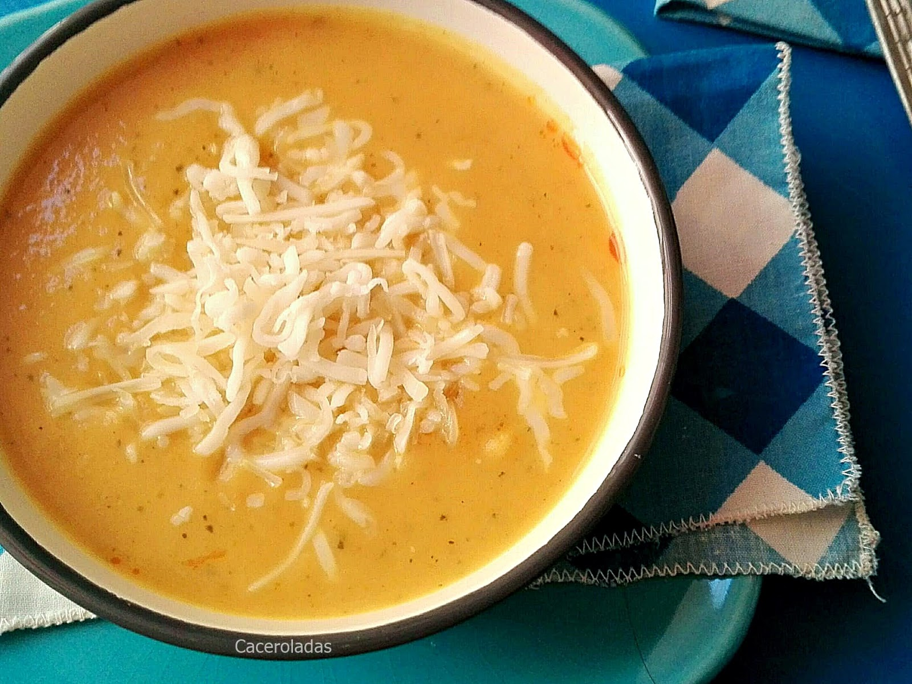

Sopa Crema

Ingredientes:
2 papas
1 boniato
2 zanahorias
1/3 zapallo kabutia
1/2 cebolla
Agua
Sal
Opcional:
Condimentos: pimienta, nuez moscada, etc.
Queso rallado
Preparación:
En una olla colocar las verduras peladas y cubiertas con agua con sal. Cocinar.
Quitar la cáscara del zapallo.
Se puede utilizar el mixer directamente en la olla o pasar a una licuadora o procesadora. Se logra una textura suave y homogénea.
Condimentar gusto.
Servirla con queso rallado.